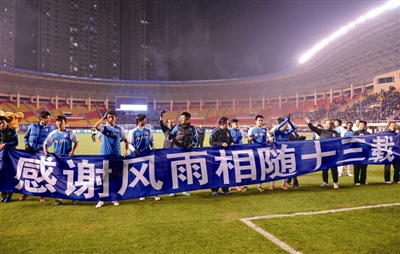

大连实德：折腾下败落的大连足球
1999年，实德集团在外力的影响下，"入主"大连万达足球俱乐部，这是大连足球的一个重要转折点，至此，大连足球进入了长达十四年的大连实德时期，如果说此前五年前的大连万达给大连足球带来的是荣誉。那么实德集团给大连只留下两个字，折腾。
2000年，实德宣布以1.2亿购入万达手中70%的股份，这一桩交易即使在当时也被看做是一个天方夜谭式的买卖，因为实德集团的年收入不过三个亿，这三亿还不是净利润，只是善于做帐的徐明的"帐面收入"，彻底收购大连万达俱乐部之后，大连实德俱乐部的注册资本不过三千万元。2000、2001、2002三个赛季里，大连实德依靠万达留下的班底再次拿到了甲A三连冠。实德集团对此做出的回应可能谁也想不到：实德通过会计师事务所，将大连实德俱乐部的总资产额改为1.2个亿。其结果是，实德集团立刻拿大连实德足球俱乐部（含固定资产）向银行做抵压贷款，实德集团顺利拿到了1.2亿的贷款后，偿还了当时购买球队时欠万达集团的7000万元费用，至此，万达与实德关于俱乐部的转让才算银货两清。
实德集团炒作的最高峰是收购四川全兴，2001年底，大连大河投资有限公司接手四川全兴俱乐部，其法人代表是徐明的父亲徐家盛；此时，徐明再次盘剥了大连足球的财富，他以大连青年队为基础，组建了大连赛德隆参加2002年的甲B联赛。 根据国际足联章程规定，同一级别联赛中，禁止有同一投资控股两支球队，最明显的例子是皇马二队参加西乙联赛，即使获得西乙前三获得下赛季西甲资格，也必须放弃西甲参赛权，因为皇马一队在西甲中。同样，四川大河与大连实德存在着明显的"投资关联"，参加联赛有违公平原则。因此，在2002年下半年，中国足协表态，实德、大河和赛德隆三家俱乐部，如果"不解除关联关系，2003年将只允许一家俱乐部"注册。随后，太平洋保险和冠城地产依次入主四川足球俱乐部，但不论是太平洋保险还是冠城地产，徐明均有股份。根据估算，2004年时，至少有四至五支中超和甲级俱乐部，或多或少与徐明存在着关联。据说，当时最吸引徐明的是"足球博彩"市场；此时，徐明的大连实德、张海的深圳健力宝和北京国安进行所谓G7革命，但如同实德走过的所有棋一般，徐明当时领导的G7革命，更多的是想从中国足协手中要权，这是一场权力的再分配。对于大连足球来说，这种权力的分配没有任何正面意义。
2006年，大连实德费尽九牛二虎之力打入足协杯的决赛，面对强大的竞争对手山东鲁能，被对手击败，这是大连足球最后一次接近冠军，2007年，主帅邦弗雷雷与总经理林乐丰矛盾尖锐，林乐丰最终下课；2008年初，实德系已成昨日黄花，大连实德开始卖球员求生，2011年，大连阿尔滨冲入中超，2012年10月，大连实德宣布赛季结束后解散，阿尔滨与实德合并为大连阿尔滨俱乐部。
彼时，那位曾经要打造中超实德系的徐明，已失联近半年，直到八个月后，才以证人身份出现在山东法庭上指证一位前任大连的"足球市长"。在徐明手中，大连足球已失去一切，完美的青训体制彻底被破坏，大量优秀的年轻球员外流。炒作、资本连带担保、违背足球规律，球员流失，竖敌无数，这是大连实德为大连足球留下的财富。十四年间，大连实德从冠军级球队沦落到卖血求生。表面上，赵阳明的阿尔滨接管了大连足球的全部，其实他接管的是一个支离破碎的大连足球，2013年初，合并后的大连阿尔滨准备向广州恒大叫板，这是一个战略失误，这个战略失误最终换来了大连阿尔滨的降级……